 <!-- ======= Breadcrumbs ======= -->
 <div class="breadcrumbsWhite" data-aos="fade-in">
      
  
</div><!-- End Breadcrumbs -->

<!-- ======= Events Section ======= -->
<section id="events" class="events">
    <div class="container" data-aos="fade-up">

      <div class="section-title">
        <h2>Iniciativa</h2>
        <p>Huertos Comunitarios</p>
      </div>

      <div class="col-md-12 row contenedorHuertos">
        
        
        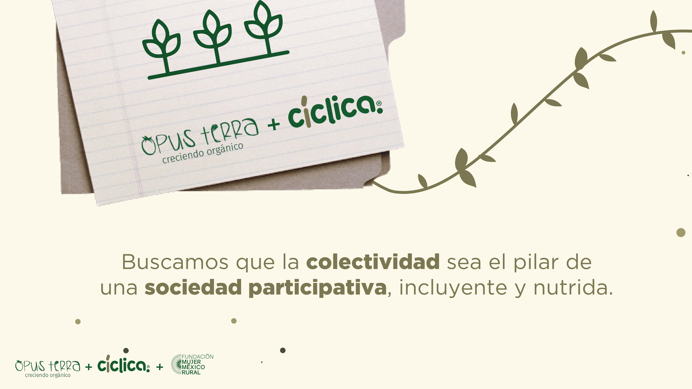
        
        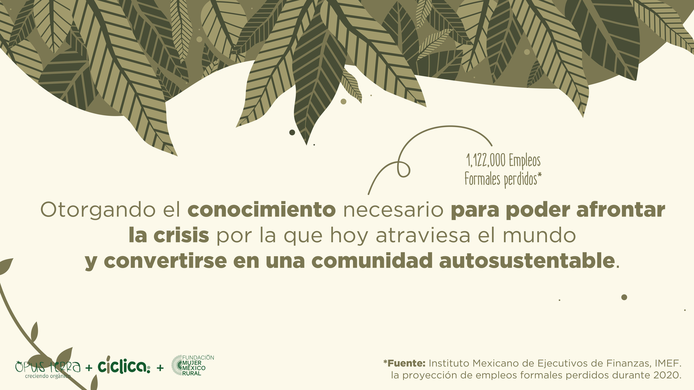
        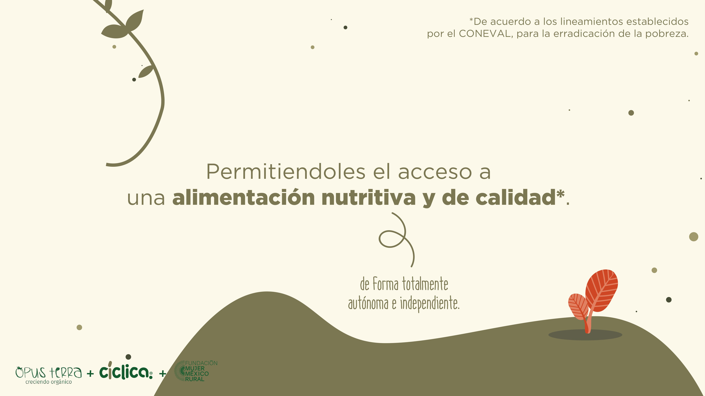
        
        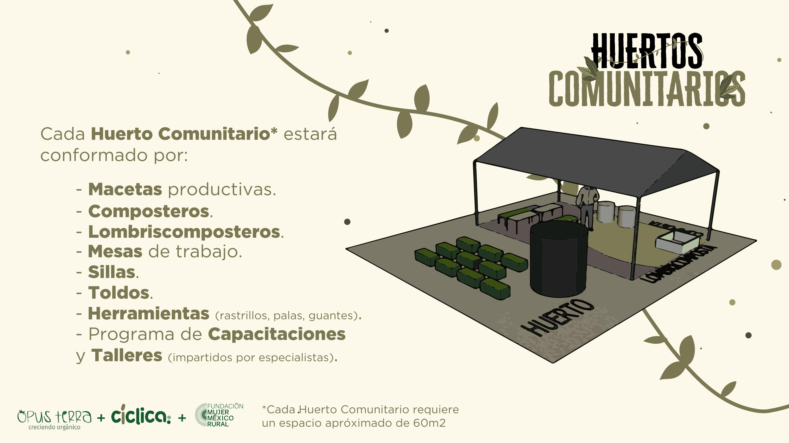
        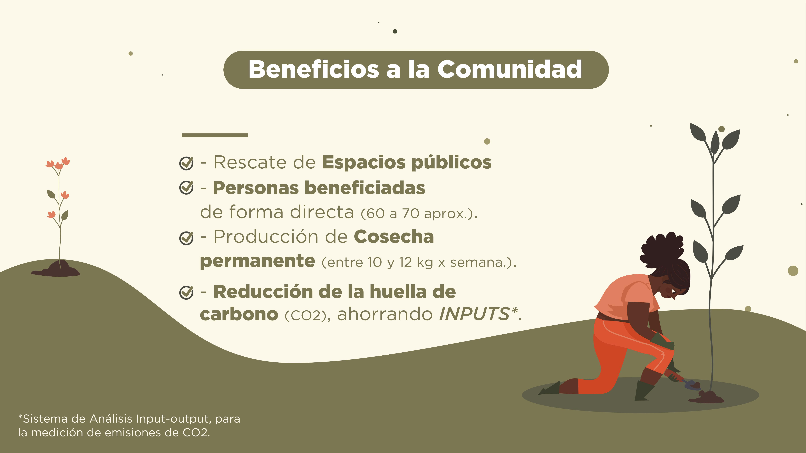
        
        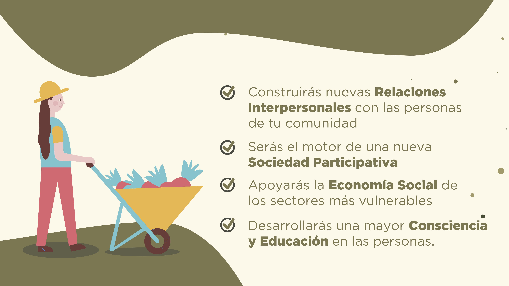
        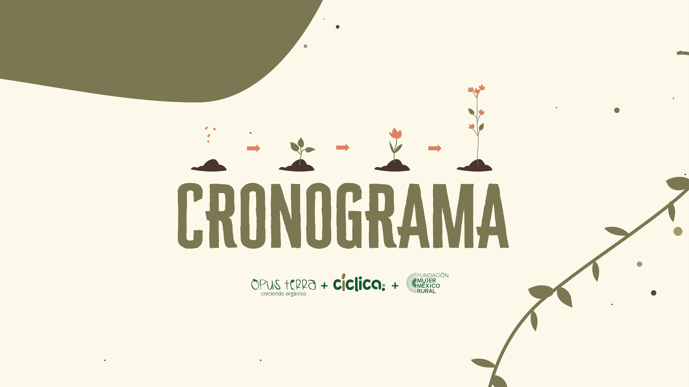
        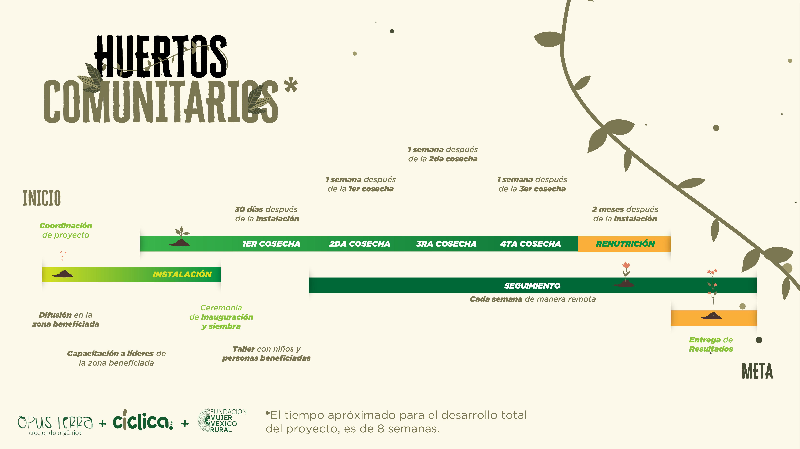
        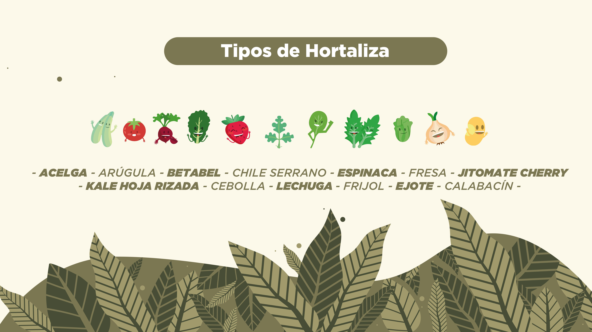
        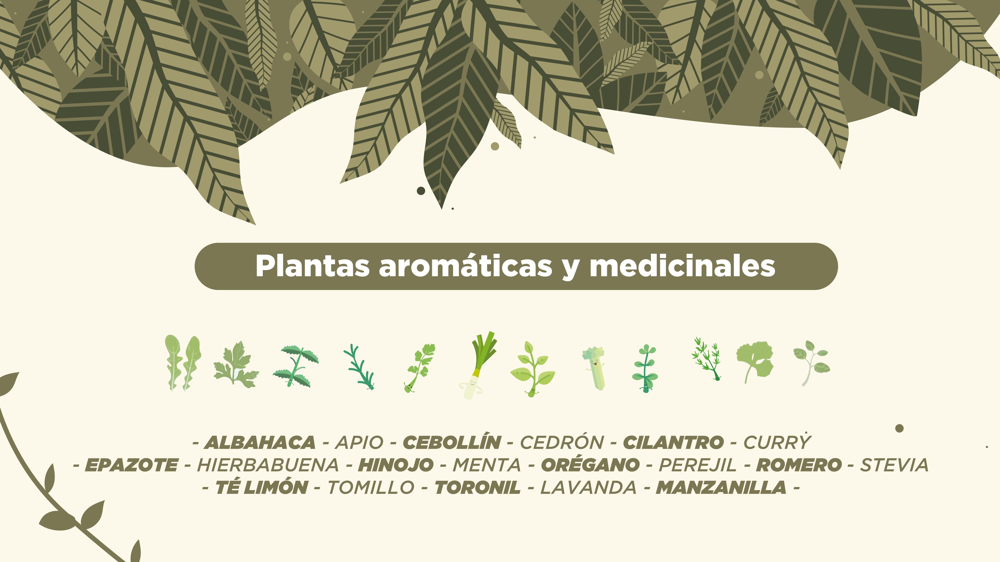
        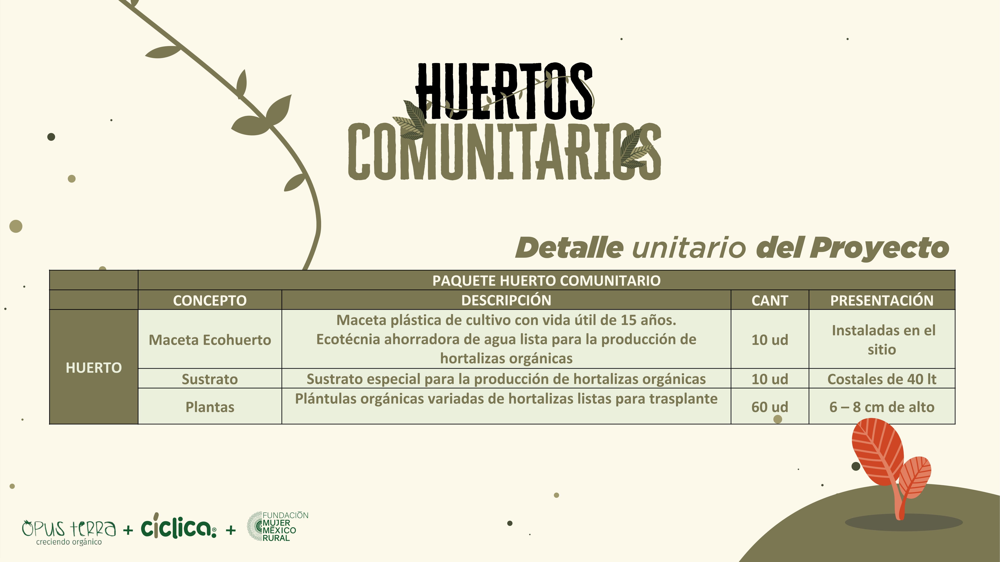
        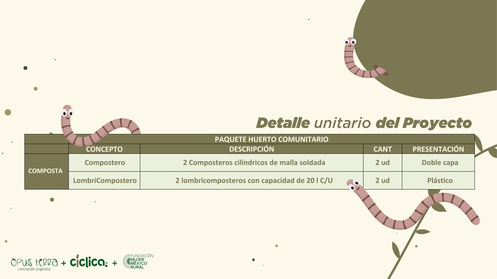
        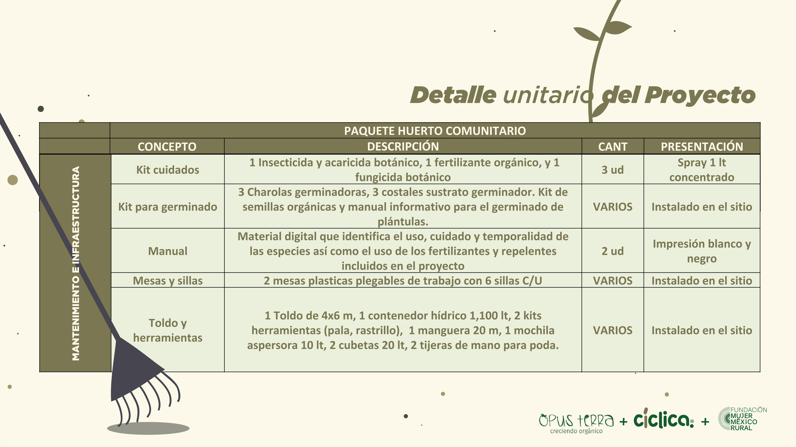
        
        
        
      </div>


    </div>
  </section><!-- End Events Section -->